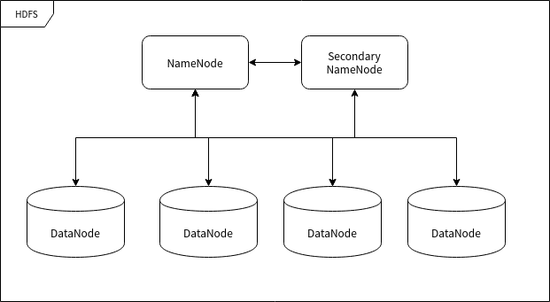

This chapter focuses on introducing the concepts and components of Hadoop, and belongs to the theoretical chapters. If you are in a hurry, you can skip it. But the author does not recommend skipping it, because it is closely related to the following chapters.
Hadoop Overall Design
The Hadoop framework is a framework for big data processing on computer clusters, so it must be software that can be deployed on multiple computers. Hosts deployed with Hadoop software communicate with each other through sockets (network).
Hadoop mainly contains two major components: HDFS and MapReduce. HDFS is responsible for distributed data storage, and MapReduce is responsible for mapping and reducing data, as well as aggregating the processing results.
The most fundamental principle of the Hadoop framework is to use a large number of computers to compute simultaneously to speed up the processing of large amounts of data. For example, a search engine company that wants to filter and summarize hot words from trillions of unreduced data needs to organize a large number of computers into a cluster to process this information. If traditional databases were used to process this information, it would take a long time and a lot of processing space. This magnitude is difficult to achieve for any single computer. The main difficulty lies in organizing a large amount of hardware and integrating it into one computer at high speed. Even if successfully implemented, it would incur expensive maintenance costs.
Hadoop can run on up to thousands of cheap, mass-produced computers and organize them into a computer cluster.
A Hadoop cluster can efficiently store data and allocate processing tasks, which brings many benefits. First, it can reduce the construction and maintenance costs of computers. Second, once any computer has a hardware failure, it will not have a fatal impact on the entire computer system, because the cluster framework developed for the application layer itself must assume that computers will fail.
HDFS
Hadoop Distributed File System, Hadoop distributed file system, abbreviated as HDFS.
HDFS is used to store files in a cluster. Its core idea is Google's GFS idea, and it can store very large files.
In a server cluster, file storage is often required to be efficient and stable. HDFS achieves both of these advantages at the same time.
HDFS's efficient storage is achieved by having the computer cluster handle requests independently. Because when a user (usually a back-end program) issues a data storage request, the responding server is often processing other requests, which is the main reason for slow service efficiency. But if the responding server directly assigns a data server to the user, and then the user interacts directly with the data server, the efficiency will be much faster.
The stability of data storage is often achieved by "storing multiple copies". HDFS also uses this method. The storage unit of HDFS is the block. A file may be divided into multiple blocks and stored in physical storage. Therefore, HDFS often replicates data blocks n times according to the setter's requirements and stores them on different data nodes (servers that store data). If one data node fails, the data will not be lost.
HDFS Nodes
HDFS runs on many different computers. Some computers are dedicated to storing data, and some are dedicated to directing other computers to store data. The "computers" mentioned here can be called nodes in the cluster.
NameNode
NameNode is the node used to direct other nodes to store data. Any file system (File System, FS) needs to have the function of mapping file paths to files. NameNode is the computer used to store this mapping information and provide mapping services, playing the role of "administrator" in the entire HDFS system. Therefore, there is only one NameNode in an HDFS cluster.
DataNode
DataNode is the node used to store data blocks. After a file is recognized and chunked by NameNode, it will be stored in the assigned DataNode. DataNode has the functions of storing data and reading/writing data. The data blocks stored in it are somewhat similar to the concept of "sectors" in a hard disk, and are the basic unit of HDFS storage.
Secondary NameNode
Secondary NameNode, also called "secondary name node", is the "secretary" of NameNode. This description is apt because it cannot replace the work of NameNode, regardless of whether NameNode is capable of continuing to work. It is mainly responsible for sharing the pressure of NameNode, backing up the state of NameNode, and performing some management tasks, if NameNode requests it to do so. If NameNode breaks down, it can also provide backup data to restore NameNode. There can be multiple Secondary NameNodes.

MapReduce
The meaning of MapReduce is as obvious as its name: Map and Reduce (mapping and reducing).
Big Data Processing
Processing large amounts of data is a typical case of "simple in principle, complex in implementation". The reason it is "complex in implementation" is mainly that when large amounts of data are processed using traditional methods, hardware resources (mainly memory) become insufficient.
Now consider a piece of text (in a real environment this string may be as long as 1 PB or even more). We perform a simple "character count" statistic, that is, count the number of occurrences of every character that appears in this text:
AABABCABCDABCDE
The result after counting should be:
| Character | Occurrences |
|---|---|
| A | 5 |
| B | 4 |
| C | 3 |
| D | 2 |
| E | 1 |
The counting process is actually very simple: every time a character is read, check whether the same character already exists in the table. If not, add a record and set its value to 1; if it does, directly increment the record value by 1.
But if we change the object of counting from "characters" to "words", the sample size instantly becomes so large that a single computer may find it difficult to count the "words" used by billions of users in one year.
In this case, we still have a way to accomplish this task — we first divide the sample into segments of a size that a single computer can handle, then count them segment by segment. After each counting is completed, we perform a reduce operation on the mapped statistics, that is, merge the statistical results into a larger data result, and finally complete large-scale data reduction.
In the above case, the first stage of sorting work is "mapping", which classifies and organizes the data. Up to this point, we can obtain a result much smaller than the source data. The second stage is often completed by the cluster. After sorting the data, we need to make an overall summary of these data, after all, the mapping results of multiple nodes may have overlapping categories. During this process, the mapping results will be further condensed into obtainable statistical results.
MapReduce Concept
I found a MapReduce article on IBM's website, at the address:https://www.ibm.com/analytics/hadoop/mapreduceNow I adapt one of the MapReduce processing cases from it to introduce the details of MapReduce principles and related concepts.
This is a very simple MapReduce example. No matter how much data needs to be analyzed, the key principles are the same.
Suppose there are 5 files, each containing two columns, recording the name of a city and the corresponding temperature recorded for that city on different measurement dates. The city name is the key, and the temperature is the value. For example: (Xiamen, 20). Now we want to find the maximum temperature for each city among all the data (note that the same city may appear in each file).
Using the MapReduce framework, we can break it down into 5 map tasks, each responsible for processing one of the five files. Each map task examines every piece of data in the file and returns the maximum temperature for each city in that file.
For example, for the following data:
| City | Temperature |
|---|---|
| Xiamen | 12 |
| Shanghai | 34 |
| Xiamen | 20 |
| Shanghai | 15 |
| Beijing | 14 |
| Beijing | 16 |
| Xiamen | 24 |
The result produced by one map task for the above data is as follows:
| City | Maximum Temperature |
|---|---|
| Xiamen | 24 |
| Shanghai | 34 |
| Beijing | 16 |
Suppose the other four mapper tasks produce the following results:
| City | Maximum Temperature |
|---|---|
| Xiamen | 17 |
| Hangzhou | 25 |
| Shanghai | 29 |
| Beijing | 36 |
| Xiamen | 30 |
| Hangzhou | 17 |
| Shanghai | 31 |
| Beijing | 35 |
| Xiamen | 18 |
| Hangzhou | 17 |
| Shanghai | 17 |
| Beijing | 27 |
| Xiamen | 28 |
| Hangzhou | 18 |
| Shanghai | 14 |
| Beijing | 27 |
All these 5 results will be input into a Reduce task, which combines the input results and outputs a single value for each city, producing the following final result:
| City | Maximum Temperature |
|---|---|
| Xiamen | 30 |
| Shanghai | 34 |
| Beijing | 36 |
| Hangzhou | 25 |
For example, you can think of MapReduce as a population census. The Census Bureau sends several enumerators to each city. Each census taker in each city will count part of the city's population, and then the results are aggregated back to the capital. In the capital, the results from each city are reduced to a single count (each city's population), and then the national total population can be determined. This mapping of people to cities is parallel, and then the results are combined (Reduce). This is much more efficient than sending one person to count every person in the country in a sequential manner.
Click me to share notes
<p style="font-size:14px;">The note should be an extension of the content of this article!</p><br> <p style="font-size:12px;"><a href="../tougao.html" target="_blank">To submit an article, click here</a></p> <p style="font-size:14px;"><a href="./runoob-user-test-intro.html" target="_blank">How to get a registration invitation code</a></p> <h3 class="text-muted"><i class="fa fa-info-circle" aria-hidden="true"></i> You must <a href=".." class="runoob-pop">log in</a> before sharing notes!</h3> <p><a href="./runoob-user-test-intro.html" target="_blank">How to get a registration invitation code</a></p>